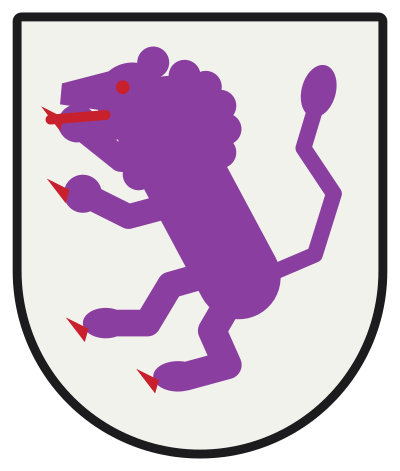
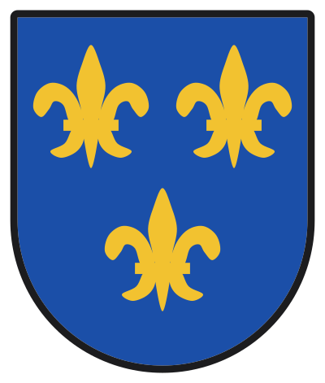
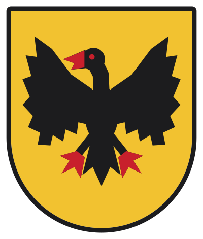
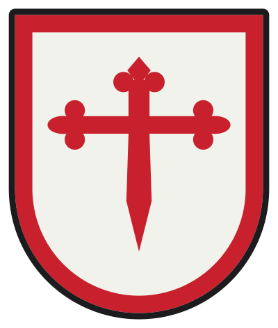
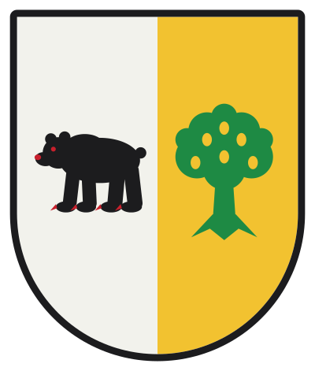
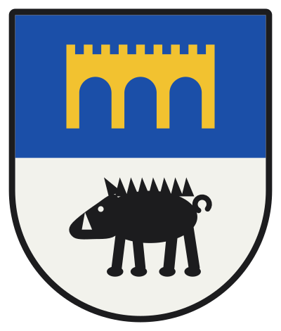
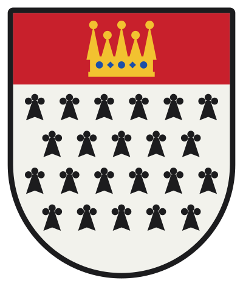
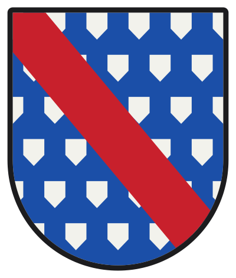
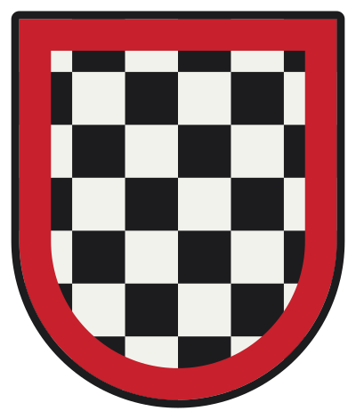

Doce blasones generados con heraldica.py, sin imágenes de terceros. Cada ficha lleva el blasonamiento en castellano. Son ejemplos de estilo: el escudo final se compone con vuestros apellidos y linajes.
CastillaEn campo de gules, un castillo de oro, aclarado de azur.

LeónEn campo de plata, un león rampante de púrpura, armado y lampasado de gules.Castilla y LeónCuartelado: 1.º y 4.º de gules; 2.º y 3.º de plata; en el 1.º, un castillo de oro, aclarado de azur; en el 2.º, un león rampante de púrpura, armado y lampasado de gules; en el 3.º, un león rampante de púrpura, armado y lampasado de gules; en el 4.º, un castillo de oro, aclarado de azur.Palos de gulesPalado de oro y gules, de 9 piezas.

Lises de FranciaEn campo de azur, tres flores de lis de oro, puestas 2 y 1.

Águila imperialEn campo de oro, un águila explayada de sable, picada y membrada de gules.

Orden de SantiagoEn campo de plata, una cruz de Santiago de gules; bordura de gules.

Oso y roblePartido de plata y oro; en el 1.º, un oso pasante de sable, armado de gules; en el 2.º, un roble arrancado de sinople, frutado de oro.

Villa del puenteCortado de azur y plata; en el 1.º, un puente de tres ojos de oro; en el 2.º, un jabalí pasante de sable, defendido de plata.

Armiños y jefeEn campo de armiños, un jefe de gules; una corona de oro, enjoyada de azur en jefe.

VerosEn campo de veros, una banda de gules.

JaqueladoJaquelado de plata y sable, de 6 piezas; bordura de gules.